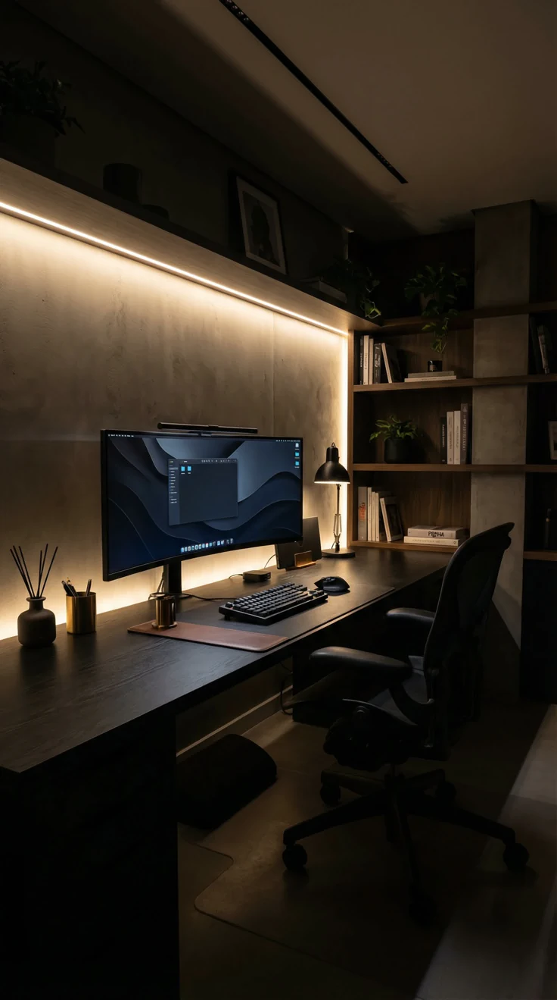
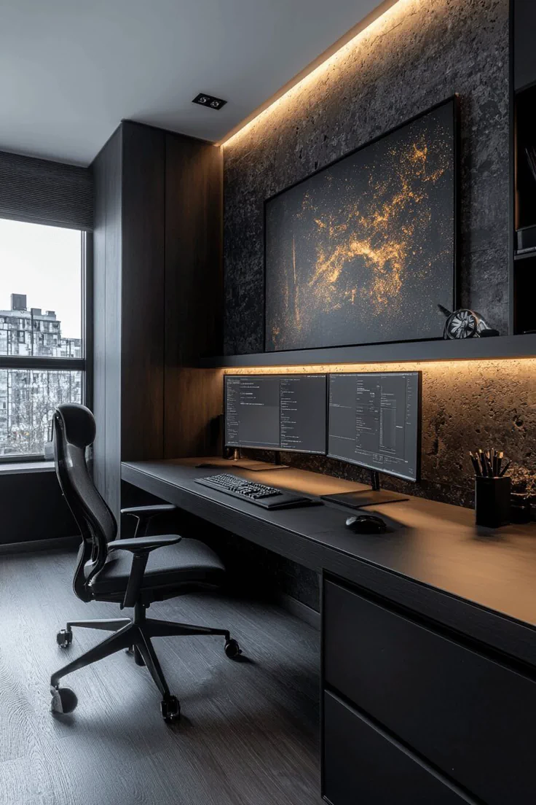
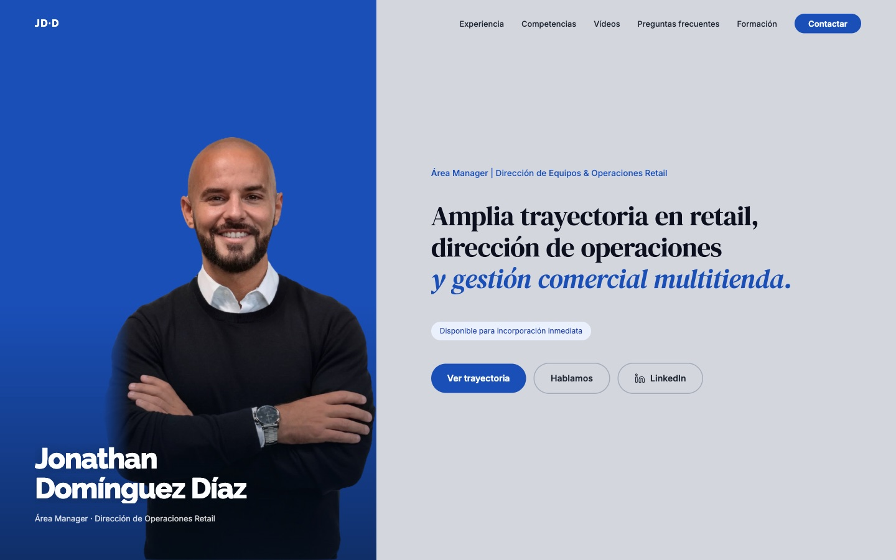
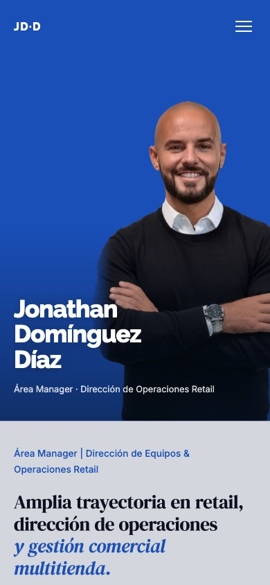

01
Desarrollo web
Webs a medida, rápidas y pensadas para convertir visitas en clientes. Diseño propio, sin plantillas, y preparadas para Google y para el móvil. Como la que estás viendo.


Consultor de negocio
Ayudo a negocios locales a crecer con estrategia, una web que vende e inteligencia artificial.
Analizamos tu negocio juntos, definimos un plan con objetivos claros y me encargo de ponerlo en marcha. Un único responsable, de principio a fin.
Primera reunión de 40 minutos · Sin compromiso
Muchos negocios no necesitan más herramientas. Necesitan un plan claro y a alguien que lo lleve a cabo. Ese es mi trabajo: entender tu negocio, decidir qué mover primero y hacerlo realidad contigo.
Sobre mí
Me formé en marketing dentro de una de las marcas de referencia del sector en habla hispana, trabajando en estrategia, embudos de venta y campañas con presupuesto real. Hoy aplico esa experiencia a negocios locales y profesionales que quieren crecer con orden.
Trabajo en remoto con negocios de toda España. Y no me quedo en la recomendación: diseño, desarrollo y hago el seguimiento de los resultados.
El punto de partida
Se prueban acciones sueltas en redes, anuncios u ofertas, sin medir qué funciona y qué no.
Desactualizada, lenta o difícil de usar en el móvil. El cliente se va a la competencia.
Responder siempre las mismas preguntas por WhatsApp quita tiempo para atender y vender.
Tareas que hoy se pueden automatizar siguen costando horas cada semana.
Servicio principal
Antes de invertir en una web, en anuncios o en inteligencia artificial, conviene saber qué necesita de verdad tu negocio. Analizamos tu situación, fijamos objetivos y te entrego una hoja de ruta clara, con prioridades, plazos e indicadores.
Qué incluye
Pensada para comercios, clínicas, centros deportivos, hostelería y servicios profesionales.
Solicitar diagnósticoUna primera reunión de 40 minutos para conocer tu negocio, tus objetivos y dónde están las oportunidades de mejora.
Un plan por escrito con prioridades, plazos, indicadores y presupuesto cerrado. Sabes qué se hace, cuándo y para qué.
Pongo en marcha lo acordado: web, inteligencia artificial, automatizaciones o campañas, sin intermediarios.
Revisamos los resultados de forma periódica y ajustamos el plan según lo que digan los datos.
Ejecución
01
Webs a medida, rápidas y pensadas para convertir visitas en clientes. Diseño propio, sin plantillas, y preparadas para Google y para el móvil. Como la que estás viendo.

02
Asistentes que responden a tus clientes a cualquier hora, gestión de reservas y automatización de tareas repetitivas, integrados con las herramientas que ya utilizas.
Ejemplo · Respuesta automática en WhatsApp
Hola, ¿tenéis hueco el jueves por la tarde?
Sí: a las 17:30 o a las 18:15. ¿Te reservo una?
La de las 18:15, gracias.
Reservado. Te enviaremos un recordatorio el jueves por la mañana.
Caso real
Web profesional · Marca personal
Área Manager · Dirección de Operaciones Retail
Veinte años dirigiendo tiendas y un currículum de dos páginas. El objetivo: que un responsable de selección conozca a la persona, no solo un PDF más.
jonathandominguezdiaz.com ↗
El resultado Su primera impresión ya no es un PDF. Es él, en su propia web.
01 · El reto
Un currículum enumera, pero no transmite cómo lidera una persona. Incorporamos un vídeo de presentación de minuto y medio, con subtítulos, para que el seleccionador le escuche antes de llamarle.
02 · La estructura
Su paso por Movistar, Telyco y Yoigo, convertido en una trayectoria interactiva de 2010 a 2026 con lo que importa a quien contrata: tiendas, equipos y objetivos.
03 · La historia
Cuatro apartados en primera persona: sus comienzos, la decisión más difícil, su mayor error y su método. Lo que diferencia a un candidato de otro con la misma experiencia.
Las cifras de su trayectoria que la web pone en valor

Qué incluye el proyecto
Preguntas frecuentes
Un análisis de tu negocio y de tu presencia digital, la definición de tu cliente ideal y tu posicionamiento, y una hoja de ruta con prioridades, plazos e indicadores. Después, seguimiento de los resultados para ajustar lo necesario.
No. La consultoría tiene sentido por sí sola. Si después quieres que me encargue de la ejecución, lo hago yo directamente, sin intermediarios.
Con negocios locales y profesionales: comercios, clínicas, centros deportivos, hostelería y servicios. En remoto, con negocios de toda España.
Depende del alcance. Lo concretamos tras la reunión de diagnóstico, con un presupuesto cerrado y sin compromiso.
No. Me encargo de toda la parte técnica para que tú puedas centrarte en tu negocio.
Ejecuto lo que propongo. No entrego un documento y desaparezco: diseño, desarrollo y respondo de los resultados.
Contacto
Cuéntame en qué punto estás y te propongo una primera reunión de diagnóstico de 40 minutos, sin compromiso.